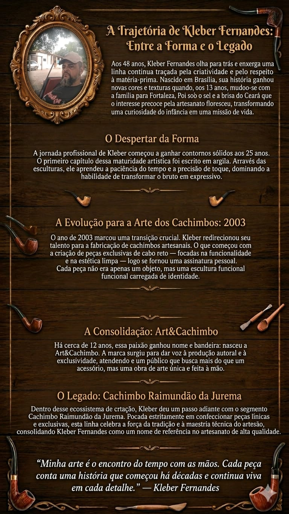

Nossa História
A história dos cachimbos Raimundão da Jurema é uma jornada de tradição, arte e espiritualidade. Cada peça conta uma história, cada detalhe revela a maestria dos artesãos que dedicam suas vidas a preservar esta cultura milenar. Desde a seleção das madeiras nobres até o acabamento final, cada cachimbo é uma obra única, carregada de simbolismo e significado.